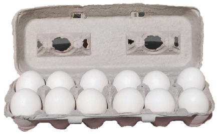
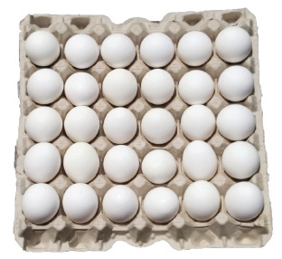

Eggs going to the market must have acceptable shapes and sizes. An acceptable shape is that of a pear shape, clearly showing the broad and narrow ends of the egg (refer to Figure 11.5(a)). When stacking eggs in trays, the broad end should always be uppermost. This allows for the air cell to remain at the top side. In addition, the narrow tip is usually thicker and stronger and it helps in supporting the weight of the egg.
Storage of table eggs:
The egg storage room or area should be clean, free of strong smells and away from rodents. Eggs can be maintained in good condition at a temperature of 10°C or lower. However, the exact storage condition will depend on the length of storage required. For less than 7 days, table eggs can be stored in a cool room where temperatures do not exceed 20°C. When the temperature in the egg storage room or area is above 20°C, serious loss of egg quality and weight occurs. For 6 – 8 weeks, table eggs should be kept in temperatures around 8 - 10°C and a relative humidity of 85%.
Marketing of table eggs
Table eggs are sold for direct human consumption or used in cooking and baking. Before starting production, it is important to identify the market for the eggs thoroughly. To achieve this, you should search for important information which will enable you to make informed decisions about the marketing of your table eggs. The following are some key aspects you will need to work on:
Marketing middlemen:
You should be familiar with different middlemen involved in the egg business. Marketing middlemen are like helpers who connect egg producers to people who want to buy eggs. They can be wholesalers, retailers, agents, or brokers. Wholesalers buy eggs in large quantities from producers and sell them in bulk to retailers. Retailers sell eggs in smaller quantities to consumers. Middlemen store and transport eggs, promote them, and make it easier for people to buy eggs.